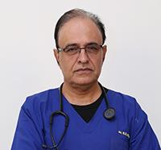
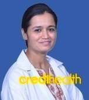
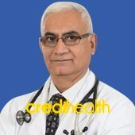

Contact Us +91 96366 20000 / 01 | wockhardthospital@hospital.com

Dr.Joshi cardiologist
Dr. Joshi is a cardiologist he is a Heart surgeon and has experience of 20years.
he has many achivements in life he is recognize as best Heart surgeon around the world
he also work for Trustee and provide Free services for those who are in need.
 Dr Sanjay Orthopedics
Dr Sanjay Orthopedics
Dr Sanjiv KS Marya is the Chairman of Bone and Joint Institute at Medanta Hospital.
He is a renowned orthopedic and joint replacement surgeon. Dr Marya has been in the
field of orthopedic surgery for almost 30 years. Dr Marya specializes in Joint
Replacement Surgery for the joints of upper and lower limbs (Primary and Revision)
and Trauma Management based on AO Principles. Dr SKS Marya has pioneered bilateral
joint replacement of knee and hip joints i.e. replacing both joints in one sitting.
He has initiated the Unicompartmental (Half Knee) replacement and has done exclusive
work on fractures in joint replacement. He has also introduced computer assisted
joint replacement surgery in India. Before joining Medanta Hospital, Dr Marya was
associated with Max Hospital and Apollo Hospital in New Delh

Dr. Aruna Kalra Gynecologist
Dr. Aruna Kalra is currently working with the CK Birla Hospital for Women, Gurgaon. Dr.
Aruna Kalra is a renowned Obstetrician and Gynecologist, specializing in USG,
Infertility, and Endoscopic Surgeries including Laparoscopy & Hysteroscopy. She brings
with her over 17 years of experience in Obstetrics and Gynaecology across some of the
best hospitals in Delhi NCR including Batra Hospital, Paras Hospital and Kasturba
Medical College. She graduated from BRD Medical college and KMC Manglore and has been
awarded with a gold medal in academic excellence. An expert in scarless laparoscopic
surgeries, her areas of interest include minimally invasive gynaecological surgeries,
high-risk pregnancies and vaginal birth after caesarean (VBAC).

Dr. Rajiv Anand Neurologist
Dr. Rajiv Anand is presently working as Director & Sr. Consultant for Department of
Neurology at BLK Super Specialty Hospital, New Delhi. After completing his MBBS and MD
(Internal Medicine), Dr. Rajiv went on to pursue DM in Neurology specialization. Prior
to BLK hospital, he was associated as a Chairman (Department of Neurology) -
Jaipur Golden Hospital, New Delhi, and a Visiting Consultant Neurologist - Rajiv Gandhi
Cancer Institute & Research Center. Dr. Rajiv Anand always looks for advancements in
treatable neurological disorders and cost effective therapies in neurology and due to
his keen interest in the neurology field, he has contributed to various journals and
publications. He is also an invited speaker at various esteemed conferences and
presentation. He is also an active member of various medical institutions like American
Academy of Neurology, Neurological Society of India.
|
© Wockhardt Hospital, site designed & developed by DEVIL